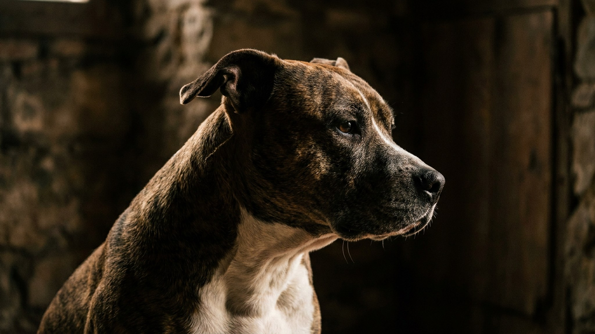

Мускулистый силуэт и широкая пасть — и прохожие переходят на другую сторону улицы. При этом дома этот же пёс лежит пузом кверху и просит почесать живот. Американский стаффордширский терьер (амстафф) собрал репутацию «машины для агрессии», которая мало общего имеет с реальным темпераментом породы. Разберём, откуда взялся миф, что на самом деле определяет характер амстаффа и почему всё решает первый год жизни.
🐾 Питомец ведёт себя странно?
AnimaLife расшифрует поведение кошки и собаки и подскажет, что делать. Попробуйте бесплатно прямо в мессенджере.
Предки породы действительно участвовали в травле и собачьих боях XIX века. Но за сто лет разведения амстаффа вели по совсем другому пути — как выставочную и семейную собаку. Ключевой момент, который теряется в спорах: на боях жёстко выбраковывали собак, агрессивных к человеку. С хендлером в разгар схватки работали руками — злобная к людям собака была опасна и не допускалась к разведению.
Поэтому породный стандарт описывает амстаффа как уверенного, дружелюбного к людям и не робкого пса. Репутацию породе создали не гены, а громкие истории в новостях, где почти всегда за трагедией стоит человек: цепь, отсутствие воспитания, натравливание.
Амстафф феноменально ориентирован на человека. Это собака-компаньон, которая хочет быть рядом всегда: спать в ногах, ездить в машине, встречать у двери всем телом. Он вынослив, игрив до старости и очень чувствителен к настроению хозяина.
Две вещи, которые важно понимать честно. Первая — сила: даже дружелюбный амстафф физически мощный, и его энтузиазм нужно направлять. Вторая — возможная задиристость к другим собакам: это идёт от терьерных корней и решается ранней социализацией и грамотными прогулками, а не «злобностью к миру».
🐾 Здоровье питомца под контролем
AI-ветеринар, дневник здоровья и персональные советы для вашего питомца — установите AnimaLife бесплатно.
🐾 Понравился разбор?
Подпишитесь на канал — каждый день разбираем по одному тревожному симптому у кошек и собак: что в пределах нормы, а когда пора к врачу. Подпишитесь, чтобы не пропустить разбор, который может спасти здоровье вашего питомца.
В быту амстафф неприхотлив: короткая шерсть, вычёсывание раз в неделю, обычная гигиена. Из-за короткой шерсти и азарта он мёрзнет зимой и легко перегревается летом — нагрузку в жару дозируют. За плановым здоровьем и весом следите вместе с ветеринаром на регулярных осмотрах.
Порода подходит активному, последовательному человеку, готовому вкладывать время в воспитание и движение. Это не собака «для галочки во дворе на цепи» и не питомец для того, кто хочет статусный устрашающий силуэт. Амстафф отдаёт ровно столько тепла, сколько получает, — и в ответ на вложенное время становится одним из самых преданных компаньонов среди всех пород.
Материал носит информационный характер и не заменяет очную консультацию ветеринара.